How to generate a membership inference attacks report?#
Check that the synthetic data protect the privacy of the real data#
Based on the Wisconsin Breast Cancer Dataset (WBCD)
[1]:
# Standard library
import sys
sys.path.append("..")
import tempfile
from pathlib import Path
# 3rd party packages
import pandas as pd
from sklearn.model_selection import train_test_split
# Local packages
from generators.ctabgan_generator import CTABGANGenerator
from generators.ctgan_generator import CTGANGenerator
from generators.dataSynthesizer import DataSynthesizerGenerator
from generators.mst_generator import MSTGenerator
from generators.smote import SmoteGenerator
from generators.synthpop_generator import SynthpopGenerator
from generators.findiff_generator import FindiffGenerator
from generators.tvae_generator import TVAEGenerator
from metrics.privacy.report import PrivacyReport
Generate synthetic data#
Load the Wisconsin Breast Cancer Dataset#
[2]:
df_real = pd.read_csv("../data/breast_cancer_wisconsin.csv").drop(
"Sample_code_number", axis=1
)
df_real.shape
[2]:
(683, 10)
[3]:
df_real.head()
[3]:
| Clump_Thickness | Uniformity_of_Cell_Size | Uniformity_of_Cell_Shape | Marginal_Adhesion | Single_Epithelial_Cell_Size | Bare_Nuclei | Bland_Chromatin | Normal_Nucleoli | Mitoses | Class | |
|---|---|---|---|---|---|---|---|---|---|---|
| 0 | 5 | 1 | 1 | 1 | 2 | 1 | 3 | 1 | 1 | 2 |
| 1 | 5 | 4 | 4 | 5 | 7 | 10 | 3 | 2 | 1 | 2 |
| 2 | 3 | 1 | 1 | 1 | 2 | 2 | 3 | 1 | 1 | 2 |
| 3 | 6 | 8 | 8 | 1 | 3 | 4 | 3 | 7 | 1 | 2 |
| 4 | 4 | 1 | 1 | 3 | 2 | 1 | 3 | 1 | 1 | 2 |
Split the real data into train and test sets#
[4]:
df_real_train, df_real_test = train_test_split(
df_real, test_size=1 / 3, random_state=42, stratify=df_real["Class"]
)
[5]:
df_real_train.to_csv("../data/WBCD_train.csv", index=False)
df_real_test.to_csv("../data/WBCD_test.csv", index=False)
Create the metadata dictionary#
The continuous and categorical variables need to be specified, as well as the variable to predict for the future learning task (used by SMOTE)
[6]:
metadata = {
"continuous": [
"Clump_Thickness",
"Uniformity_of_Cell_Size",
"Uniformity_of_Cell_Shape",
"Marginal_Adhesion",
"Single_Epithelial_Cell_Size",
"Bland_Chromatin",
"Normal_Nucleoli",
"Mitoses",
"Bare_Nuclei",
],
"categorical": ["Class"],
"variable_to_predict": "Class",
}
Choose a generator#
We choose synthpop as generator with default setting
[7]:
gen = SynthpopGenerator(
df=df_real_train,
metadata=metadata,
random_state=42, # for reproducibility, can be set to None
generator_filepath=None, # to load an existing generator,
variables_order=None, # use the dataframe columns order by default
min_samples_leaf=5, # default = 5
max_depth=None,
)
Fit the generator to the real train data#
[8]:
gen.preprocess()
gen.fit(save_path="../results/attack/generator/1st_generation") # the path should exist
Generate synthetic data#
[9]:
df_synth_train = gen.sample(
save_path="../results/attack/data/1st_generation", # the path should exist
num_samples=len(df_real_train),
)
[10]:
df_synth_test = gen.sample(
save_path="../results/attack/data/1st_generation", # the path should exist
num_samples=len(df_real_test),
)
Generate 2nd generation synthetic data#
We choose the same generator and setting to generate the 2nd generation synthetic data
[11]:
gen_2nd = SynthpopGenerator(
df=df_synth_train,
metadata=metadata,
random_state=42, # for reproducibility, can be set to None
generator_filepath=None, # to load an existing generator,
variables_order=None, # use the dataframe columns order by default
min_samples_leaf=5, # default = 5
max_depth=None,
)
[12]:
gen_2nd.preprocess()
gen_2nd.fit(
save_path="../results/attack/generator/2nd_generation"
) # the path should exist
[13]:
df_synth_2nd = gen_2nd.sample(
save_path="../results/attack/data/2nd_generation", # the path should exist
num_samples=len(df_synth_train),
)
Generate privacy report#
Gethor real and synthetic data into dictionaries#
[14]:
df_real_dict = {}
df_real_dict["train"] = df_real_train
df_real_dict["test"] = df_real_test
# 1st and 2nd generation synthetic data
df_synth_dict = {}
df_synth_dict["train"] = df_synth_train
df_synth_dict["test"] = df_synth_test
df_synth_dict["2nd_gen"] = df_synth_2nd
Generate the privacy report#
[15]:
report = PrivacyReport(
dataset_name="Wisconsin Breast Cancer Dataset",
df_real=df_real_dict,
df_synthetic=df_synth_dict,
metadata=metadata,
figsize=(8, 6), # will be automatically adjusted for larger or longer figures
random_state=42, # for reproducibility purposes
report_filepath=None, # load a computed report if available
metrics=None, # list of the metrics to compute. If not specified, all the metrics are computed.
sampling_frac=0.5, # the fraction of data to sample from real and synthetic datasets for better computing performance
num_repeat=10, # for the metrics relying on predictions
num_kfolds=3, # the number of folds to tune the hyperparameters for the metrics relying on predictors
num_optuna_trials=15, # the number of trials of the optimization process for tuning hyperparameters for the metrics relying on predictors
use_gpu=False, # run the learning tasks on the GPU
)
[16]:
report.compute()
LOGAN test set shape: (228, 10)
TableGan test set shape: (228, 10)
Detector test set shape: (228, 10)
Get the summary report as a pandas dataframe#
[17]:
report.specification()
----- Wisconsin Breast Cancer Dataset -----
Contains:
- 455 instances in the train set,
- 228 instances in the test set,
- 10 variables, 9 continuous and 1 categorical.
[18]:
df_summary = report.summary()
[19]:
by = ["name", "objective", "min", "max"]
df_summary.groupby(by).apply(lambda x: x.drop(by, axis=1).reset_index(drop=True))
[19]:
| alias | submetric | value | |||||
|---|---|---|---|---|---|---|---|
| name | objective | min | max | ||||
| Collision | max | 0 | 1.0 | 0 | collision | precision | 0.185400 |
| 1 | collision | recall | 0.997959 | ||||
| 2 | collision | f1_score | 0.307894 | ||||
| 3 | collision | recovery_rate | 0.157235 | ||||
| inf | 0 | collision | avg_num_appearance_realtrain | 1.463023 | |||
| 1 | collision | avg_num_appearance_realcontrol | 1.349112 | ||||
| 2 | collision | avg_num_appearance_synth | 1.516667 | ||||
| 3 | collision | avg_num_appearance_collision_real | 3.836735 | ||||
| 4 | collision | avg_num_appearance_collision_synth | 4.081633 | ||||
| DCR | max | 0 | 1.0 | 0 | dcr | nndr_5th_percent_synthreal_train | 0.000000 |
| 1 | dcr | nndr_5th_percent_synthreal_control | 0.000000 | ||||
| inf | 0 | dcr | dcr_5th_percent_synthreal_train | 0.000000 | |||
| 1 | dcr | dcr_5th_percent_synthreal_control | 0.000000 | ||||
| min | 0 | 1.0 | 0 | dcr | ratio_match_synthreal_train | 0.412281 | |
| 1 | dcr | ratio_match_synthreal_control | 0.403509 | ||||
| Detector | max | 0 | 1.0 | 0 | detector | precision_top1% | 0.600000 |
| 1 | detector | precision_top50% | 0.594737 | ||||
| 2 | detector | precision | 0.565027 | ||||
| 3 | detector | tpr_at_0.001%_fpr | 0.007018 | ||||
| 4 | detector | tpr_at_0.1%_fpr | 0.007018 | ||||
| GAN-Leaks | max | 0 | 1.0 | 0 | ganleaks | precision_top1% | 0.500000 |
| 1 | ganleaks | precision_top50% | 0.859649 | ||||
| LOGAN | max | 0 | 1.0 | 0 | logan | precision_top1% | 0.300000 |
| 1 | logan | precision_top50% | 0.455263 | ||||
| 2 | logan | precision | 0.456295 | ||||
| 3 | logan | tpr_at_0.001%_fpr | 0.002632 | ||||
| 4 | logan | tpr_at_0.1%_fpr | 0.002632 | ||||
| Monte Carlo Membership | max | 0 | 1.0 | 0 | mcmebership | precision_top1% | 0.500000 |
| 1 | mcmebership | precision_top50% | 0.526316 | ||||
| TableGan | max | 0 | 1.0 | 0 | tablegan | precision_top1% | 0.650000 |
| 1 | tablegan | precision_top50% | 0.466667 | ||||
| 2 | tablegan | precision | 0.464987 | ||||
| 3 | tablegan | tpr_at_0.001%_fpr | 0.011404 | ||||
| 4 | tablegan | tpr_at_0.1%_fpr | 0.011404 |
Display the detailed report#
[20]:
report.detailed(show=True, save_folder=None, figure_format="png")
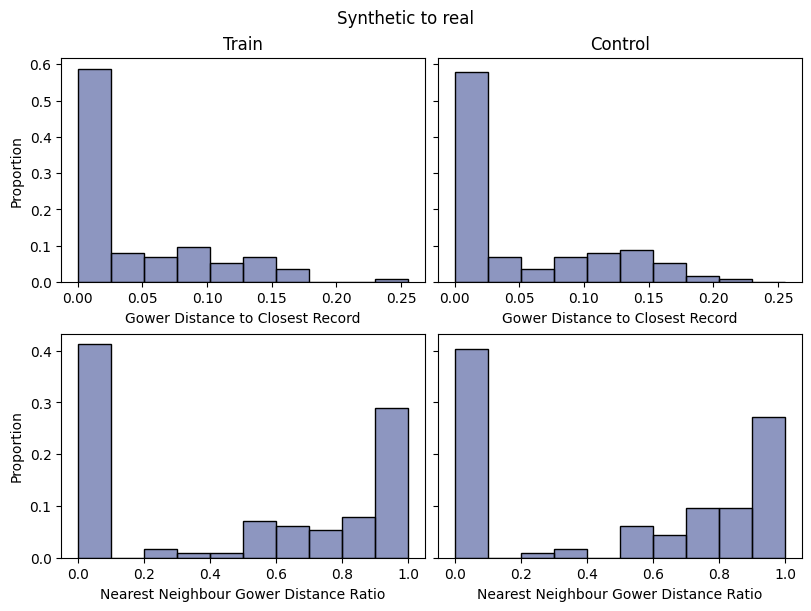
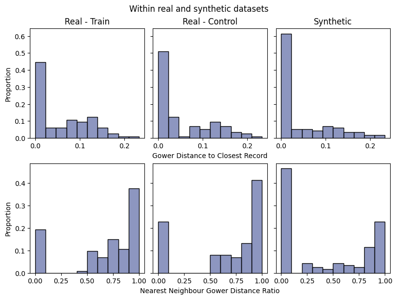
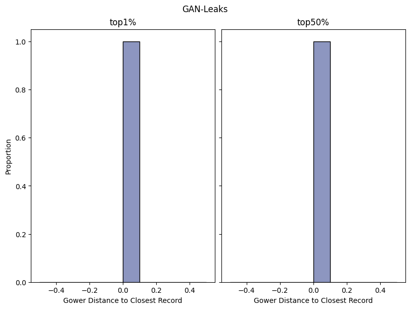
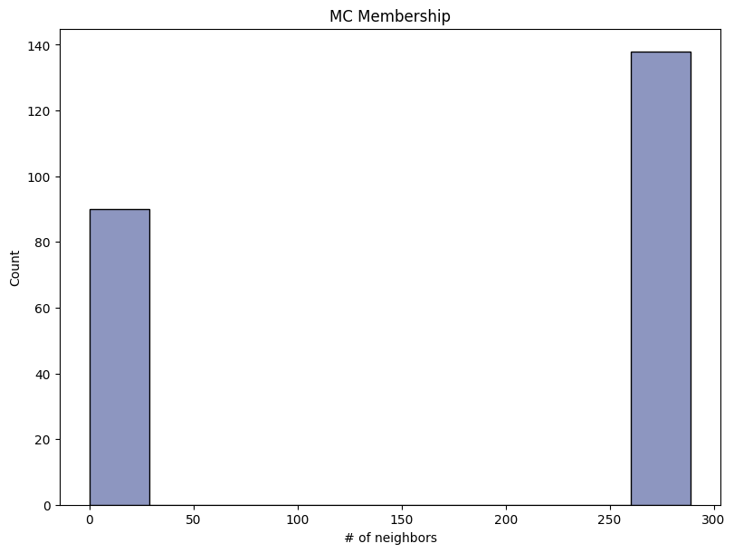
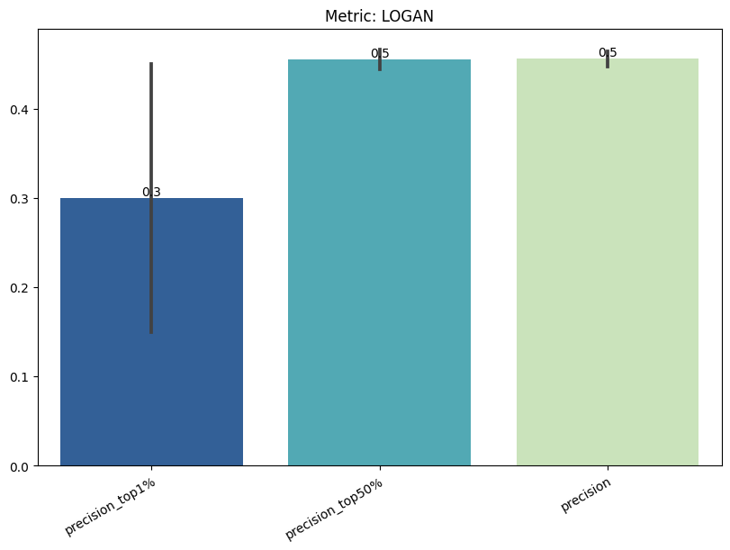
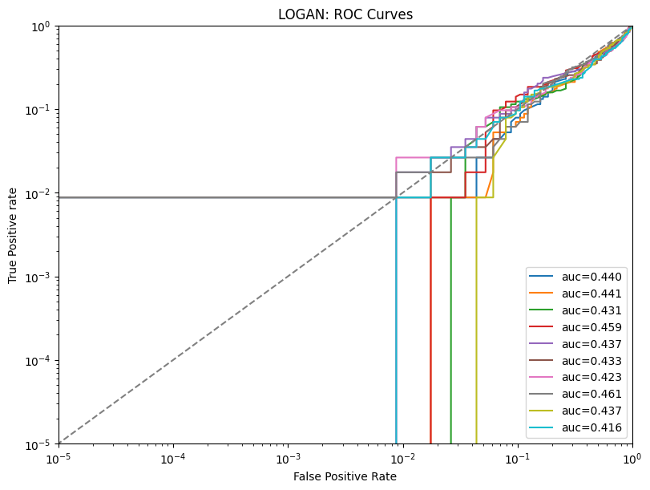
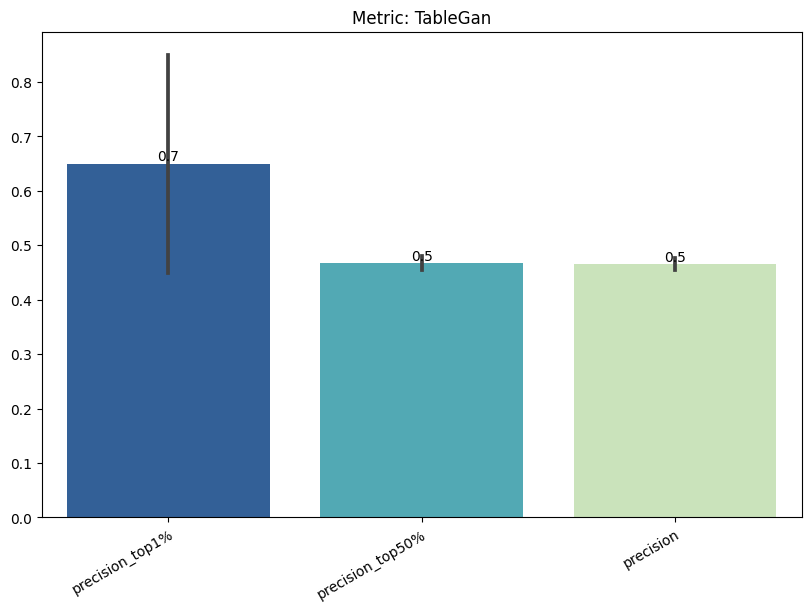
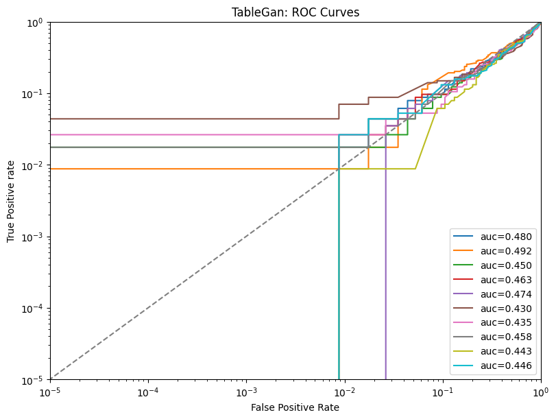
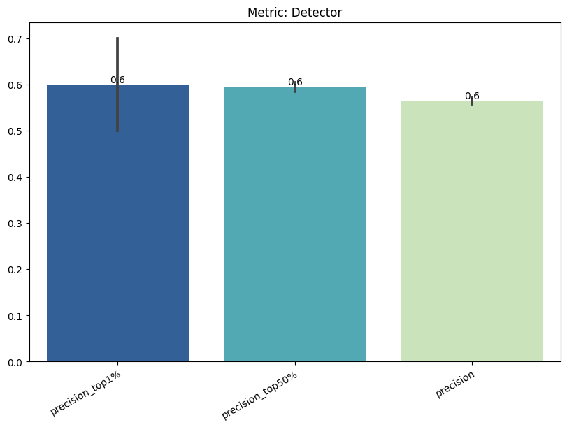
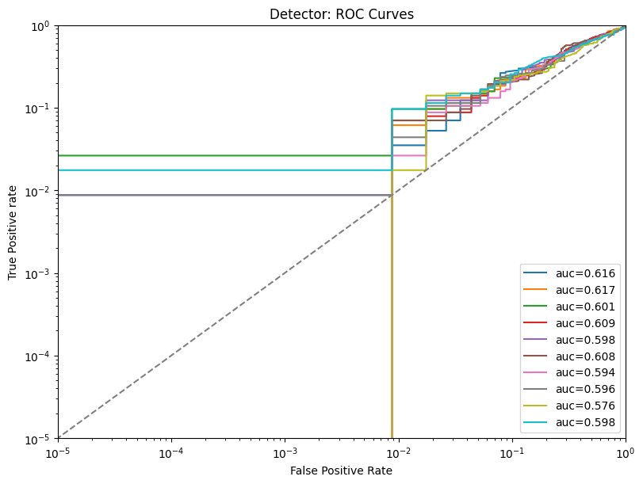
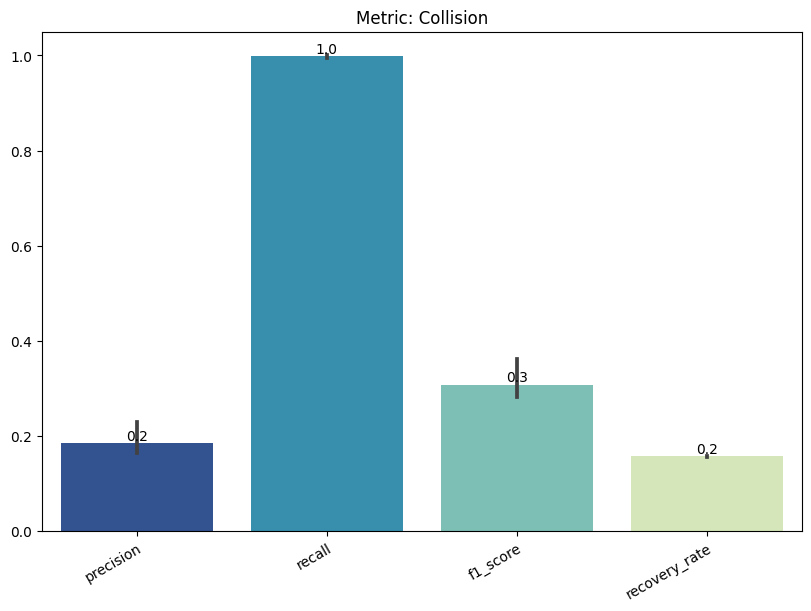
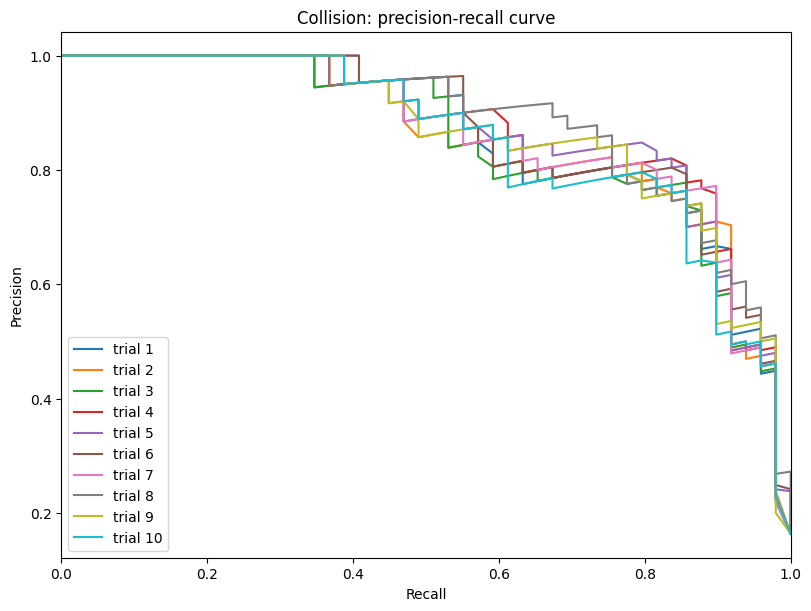
Save and load the report#
[ ]:
with tempfile.TemporaryDirectory() as temp_dir:
report.save(savepath=temp_dir, filename="privacy_report") # save
new_report = PrivacyReport(
report_filepath=Path(temp_dir) / "privacy_report.pkl"
) # load